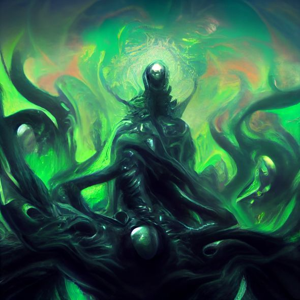

Home
Rules
Enemies
Species
Diseases
Weapons
Items
Locations
Magic
Weather
Status Effects
Stats
Alignment
Minigames
Currency
Slimes
Stats:
HP: 500
MP: 0
PHY STR: 5
PHY DEF: 10
MG STR: 0
MG DEF: 12

Slimes Racial Traits:
Absorb (Passive): When a Slime defeats an enemy, they absorb a portion of their power, permanently increasing their HP by 5% and MP by 3%.
Armor Breaker (Passive): Slimes are unable to wear armor or wield weapons.
Regeneration (Passive): Slimes naturally regenerate a portion of their HP over time, recovering 2% of their maximum HP every turn in battle.
Split Personality (Passive): Once per battle, if a Slime's HP falls below 20%, they can split into two identical slimes with the same skills as the user, each with 50% of the original's HP. The original slime will merge back together after 5 turns or when the split slimes are defeated.
Adaptive Defense (Passive): Slimes adapt to enemy attacks, gaining a 5% increase to their PHY DEF and MG DEF each time they take damage from a non-physical attack. This bonus caps at 50%. (Reset when the slime dies).
Gelatinous Form (Passive): Slimes have a 20% resistance to Piercing and Slashing attacks.
Poison Resistance (Passive): Slimes have a 20% resistance to the
Poisoned
status effect.
Fire Vulnerability (Passive): Slimes take a 30% damage increase from Fire element attacks.
Electric Vulnerability (Passive): Slimes take a 25% damage increase from Electric element attacks.
Slimes Skills:
Absorb Strike (Offensive) (Level 0): Deals damage equal to 50% of the Slime's current HP to a single target.
Regenerative Pulse (Support) (Level 5): Removes a random negative status effect from the Slime and heals 10% of their HP each turn (Lasts for 3 turns) (Can only be used once per battle).
Toxic Ooze (Offensive) (Level 15): Deals 350 DMG to a single target and has a 50% chance to apply the
Poisoned
status effect for 5 turns.
Shield Regeneration (Support) (Level 20): Increases the Slime's PHY DEF by 30% for 5 turns. Each time the Slime takes damage, they recover 2% of their maximum HP. (Can only be used once per battle)
Absorb Magic (Counter) (Level 25): An attack cast by an enemy has a 60% chance to be absorbed, granting the Slime 50% of its power. The absorbed power is converted into HP. (Can only be used twice per battle)
Liquefy (Offensive) (Level 30): Deals 400 DMG to a single target and has a 25% chance to stun them for 1 turn.
Healing Salve (Support) (Level 35): Removes all negative status effects and grants the user a 20% HP boost for 5 turns. (Can only be used once per battle)
Acidic Splash (Offensive) (Level 40): Deals 550 DMG to all enemies in a cone and applies the
Burning
status effect for 3 turns
Ooze Bomb (Offensive) (Level 50): Deals 600 DMG to a single target and has a 30% chance to apply a
Stunned
status effect for 3 turns, preventing the target from moving. (Can only be used twice per battle)
Gelatinous Shield (Support) (Level 55): Increases the Slime's MG DEF by 40% for 5 turns. While active, the Slime gains a 15% damage boost against magical attacks. (Can only be used once per battle)
Absorb Element (Support) (Level 60): For 3 turns, the Slime gains a 30% damage boost against a random elemental type and absorbs 5% of the damage dealt as HP (Can only be used twice per battle).
Phasing Ooze (Offensive) (Level 70): Deals 750 DMG to a single target and has a 50% chance to ignore the target's PHY DEF. (Can only be used 4 times per battle).
Acidic Wave (Offensive) (Level 80): Deals 850 DMG to all enemies in a large area and applies the
Burning
status effect for 5 turns.
Regenerative Surge (Support) (Level 85): Removes all negative status effects from the Slime and grants them a 50% MP boost. For the next turn, the Slime gains a 50% damage boost.
Oblivion's Grasp (Offensive) (Level 90): Deals 900 DMG to a single target and has a 20% chance to instantly kill them if their HP is below 15% (Effect does not apply to Mini-Bosses or Bosses).
Adaptive Evolution (Support) (Level 100): The Slime adapts to the battlefield, gaining immunity to the most common status effect present and a 50% boost to their damage output. Lasts for 5 turns. (Can only be used twice per battle)